HUD Tweaks
The HUD tweaks stack against master, panel by panel, at 1920 × 1080. Both builds draw every text in master's fonts. Each scene was played once per build, so bot names, timers and kill feed entries differ between the two captures; the panels' shapes and placements are what to compare.
- Master neo/master 6f53bb238
- HUD tweaks the hud-tweaks branches, each panel captured once its changes were final
- Captured 2026-11-20, Linux
Rail rounds
The MX, the SRM and the PZ252 draw their rounds smaller than the font's size, by scaling the glyph's quad. That path stood each round at a fractional position and size, so the surface sampled the glyph differently for each round: widths changed by a pixel from round to round, and on the PZ252 and the MX the rounds ran into each other. The fix stands smaller rounds on a whole-pixel pitch with whole-pixel quads, and holds the scale so each round's ink stops a pixel short of the next. Before and after were both captured with a wider mag column than the stack keeps, so the MX's rounds draw smaller here. Each crop is the rail's first 150 px, enlarged 4 times. In the stack the MX's rounds stand at full size, where the font itself sets them edge to edge with a dimmer antialiased seam between; the Ammo panel below shows it.
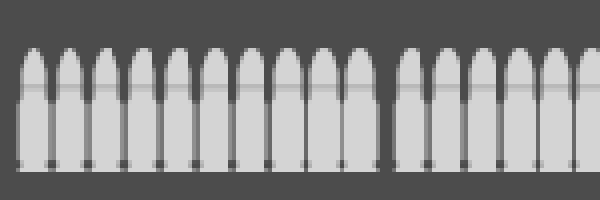
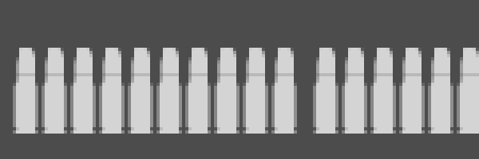
| Rounds standing apart | Round widths | Flags | |
|---|---|---|---|
| Before | 12 of 30 | 7, 8 px | rounds meet at seam, round widths differ |
| After | 30 of 30 | 6 px | none |
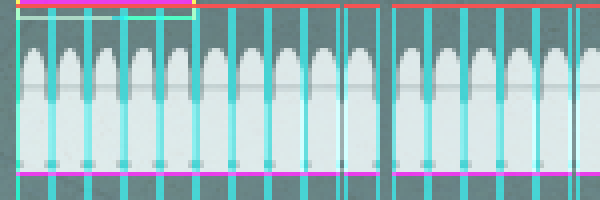
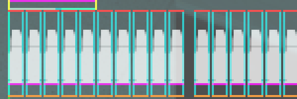
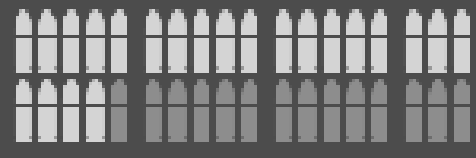
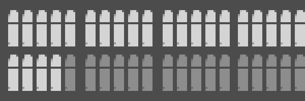
| Rounds standing apart | Round widths | Flags | |
|---|---|---|---|
| Before, row 1 | 25 of 25 | 5, 6 px | round widths differ |
| Before, row 2 | 25 of 25 | 5, 6 px | round widths differ |
| After, row 1 | 25 of 25 | 5 px | none |
| After, row 2 | 25 of 25 | 5 px | none |
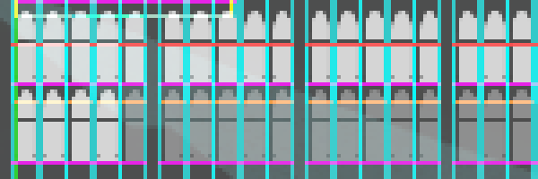
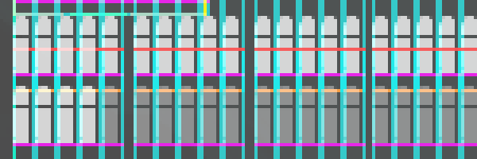
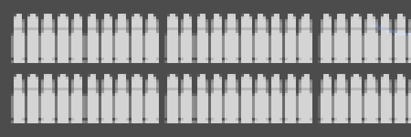
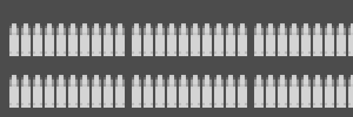
| Rounds standing apart | Round widths | Flags | |
|---|---|---|---|
| Before, row 1 | 4 of 50 | 4, 5, 10 px | rounds touch, round widths differ |
| Before, row 2 | 11 of 50 | 4, 5 px | rounds meet at seam, round widths differ |
| After, row 1 | 50 of 50 | 4 px | none |
| After, row 2 | 50 of 50 | 4 px | none |
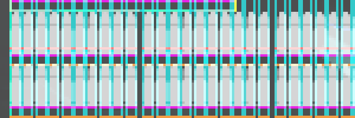
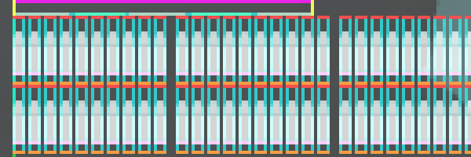
Fire mode icons
The fire mode icons lose their top rows on master: on Linux the engine draws nothing above a font's win ascent, and NOCR's is 1757 units while these icons reach 1916. The icons now draw from nocr_icons.ttf, NOCR's icon glyphs with their outlines unchanged and the win ascent raised to 1950, at a tall that keeps their size. It is the first branch of the stack, hud-tweaks/fire-mode-font. Before is the stack without it, after is with it. Each crop is enlarged 4 times; in the debug view the red line is the line box's top edge, where the glyph is cut.
| Font | Line box top | Ink | Flags | |
|---|---|---|---|---|
| Before | NOCR 63 px | y 1011 | y 1011 to 1060, x 1479 to 1523 | cut top |
| After | NOCR Icons 60 px | y 1005 | y 1008 to 1060, x 1479 to 1523 | none |
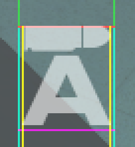
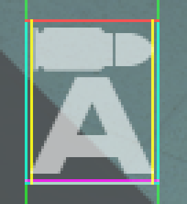
| Font | Line box top | Ink | Flags | |
|---|---|---|---|---|
| Before | NOCR 63 px | y 1011 | y 1011 to 1062, x 1479 to 1523 | cut top |
| After | NOCR Icons 60 px | y 1005 | y 1007 to 1062, x 1479 to 1523 | none |
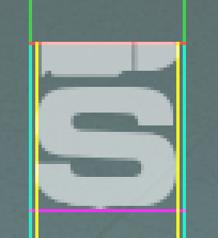
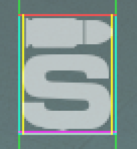
| Font | Line box top | Ink | Flags | |
|---|---|---|---|---|
| Before | NOCR 63 px | y 1011 | y 1011 to 1062, x 1480 to 1522 | cut top |
| After | NOCR Icons 60 px | y 1005 | y 1010 to 1062, x 1480 to 1522 | none |
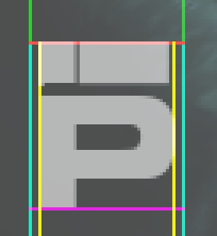
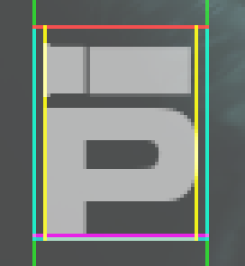
Ammo panel
The name and the counts share the top row. The round count ends on the panel's right edge, where the mag count ends, with the round glyph before it, sized to the digits. The mag column is 59 px, so the MX's rounds stand at full size, and the fire mode icons show their tops. Smaller rounds, as on the SRM and the PZ252, stand 2 px apart with wider gaps between batches, and their rows fill the rail.
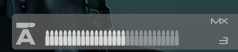
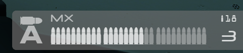
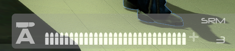
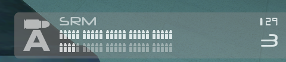
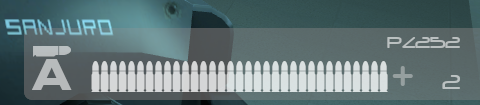
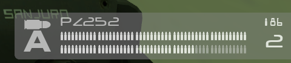
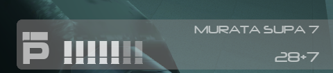
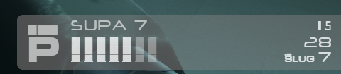
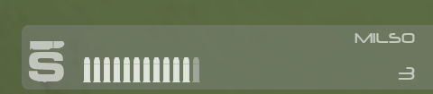
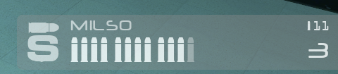
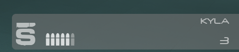
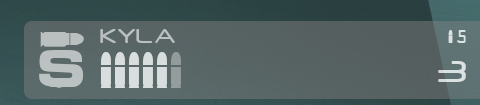
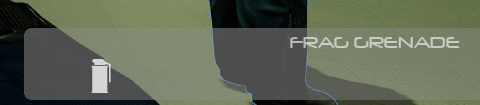
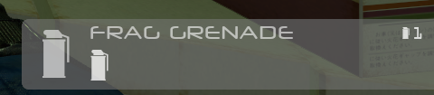
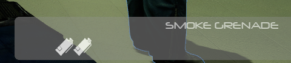
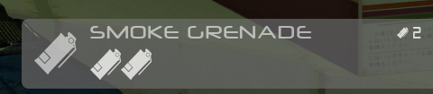
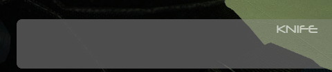
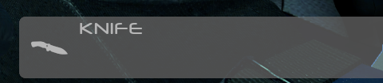
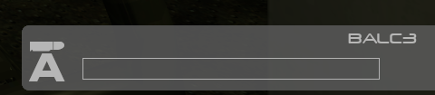
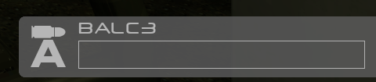
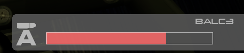
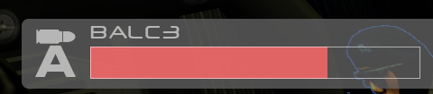
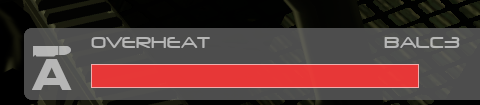
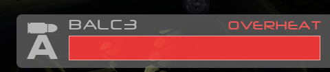
Vitals
Labels and numbers keep master's text size, Neuropol2 at 20 px, with the font's own spacing. They sit on the bottom edge of their bars, and the box's side insets match its top and bottom padding.
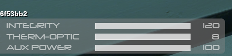
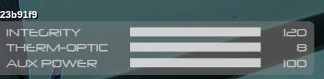
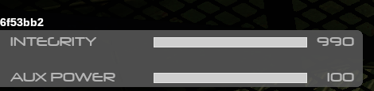
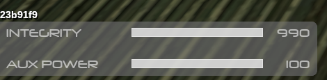
Compass
Wider padding at the ends, and the directions centered on a baseline. They stand 6 px from the top and 7 px from the bottom.
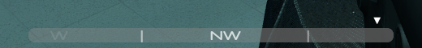
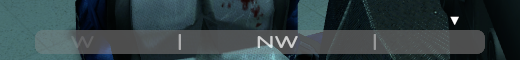
Dash
The box keeps master's width, 260 px, with the logos inset at its ends. The clock's digits keep Neuropol2's own widths and spacing, and the colon stays on the box's center, on one axis with the round counter and the alive counts, centered on the digits' height. The rows are 7 px apart.
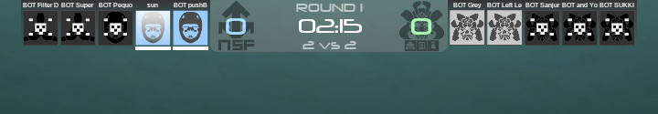
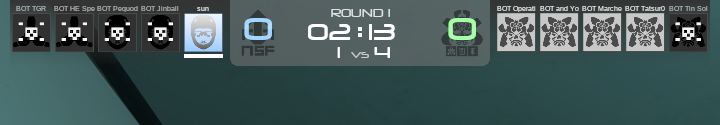
Squad list
Rows in Neuropol2 with the tiny text in Verdana, as on master. The health column ends on one edge by its ink, so values of any width line up. Health, class and rank stand in fixed columns, each as wide as the widest text it can hold, and the name comes last at its full length. A dead teammate's row shows DEAD and no rank.
Kill feed
Rows tall enough for their icons, padded 5 px top and bottom, and the feed starts below the avatars.
Killer info
The card's margin matches its avatar inset.
Spectator overlay
XP and death columns line up across a team, and long names are cut with three dots. The dash in the overlay keeps master's width too.
Full frames
Scoreboard: even margins, a rank glyph before each rank name, and its own body font. Verdana draws as Liberation Sans on Linux. The XP and D headers and values center on one axis, and the rank glyph's ink centers on the rank name's capitals.
Spectator overlay in context.
Playing with avatars beside the dash.
Holding the MX.